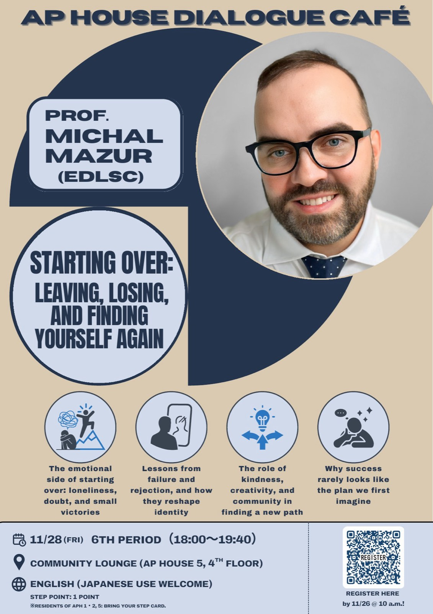
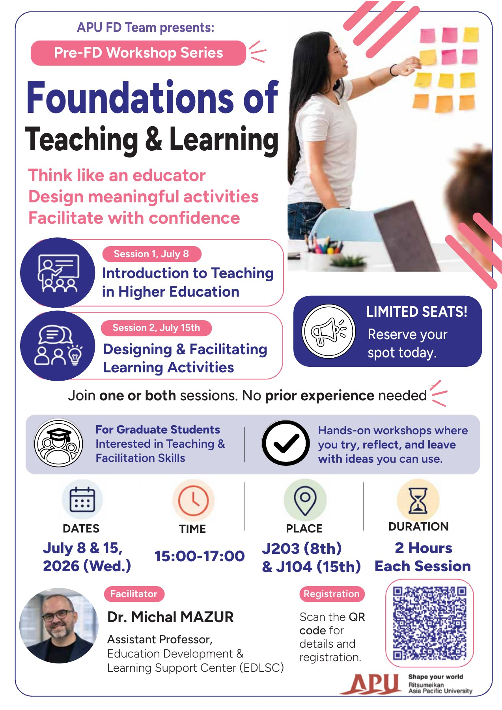
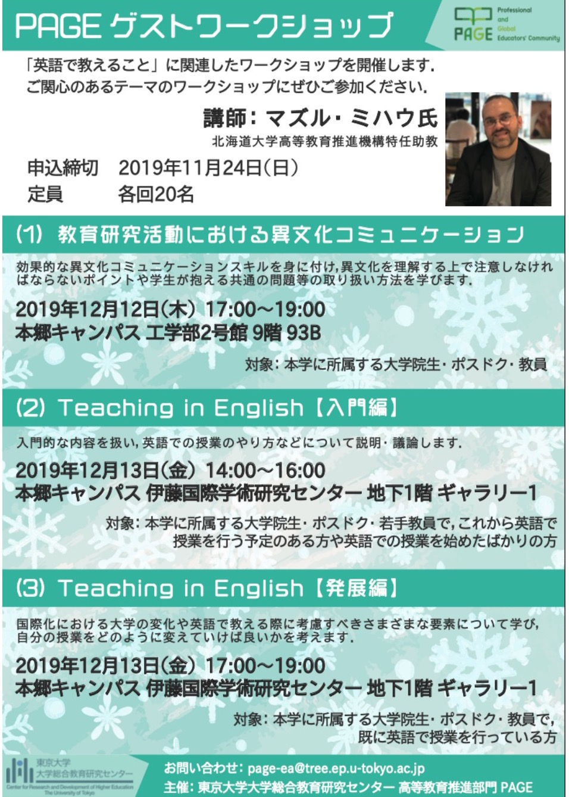
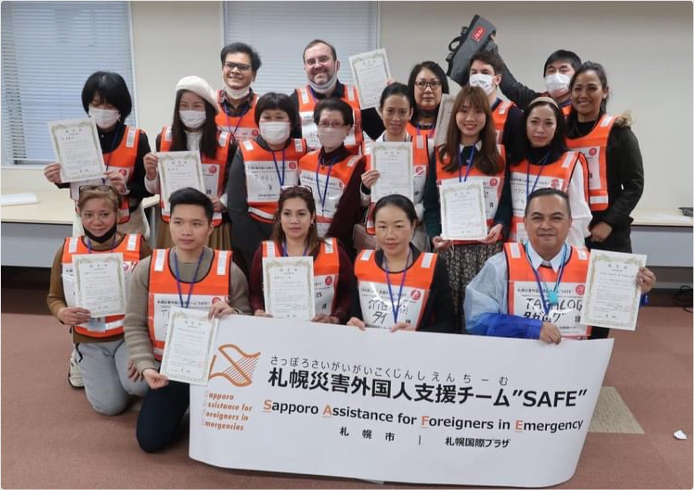
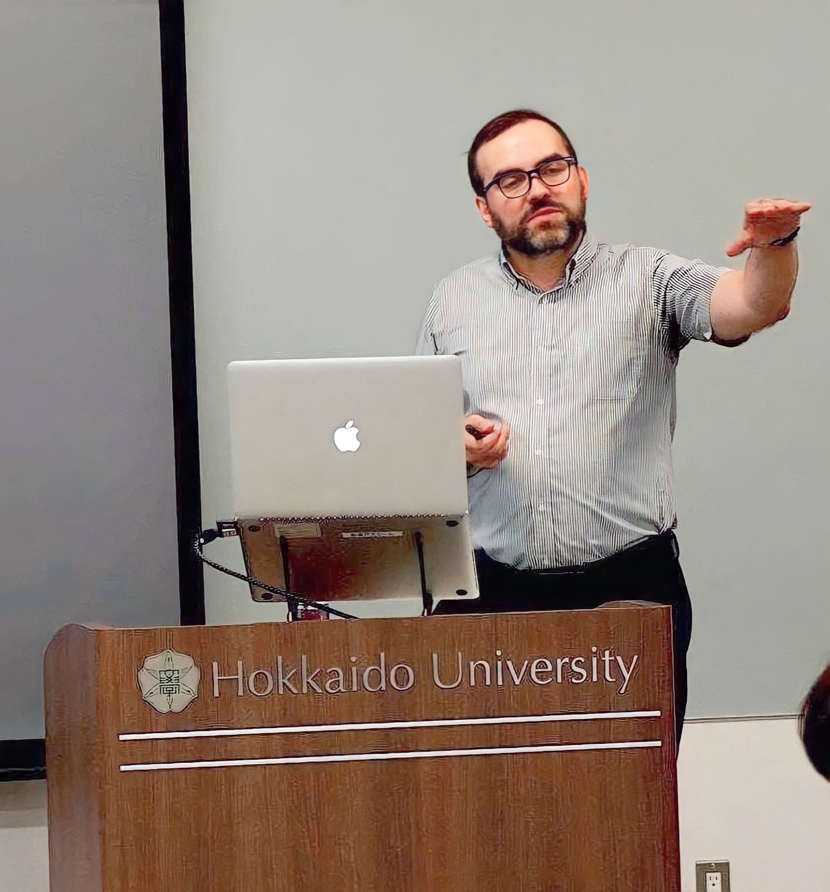
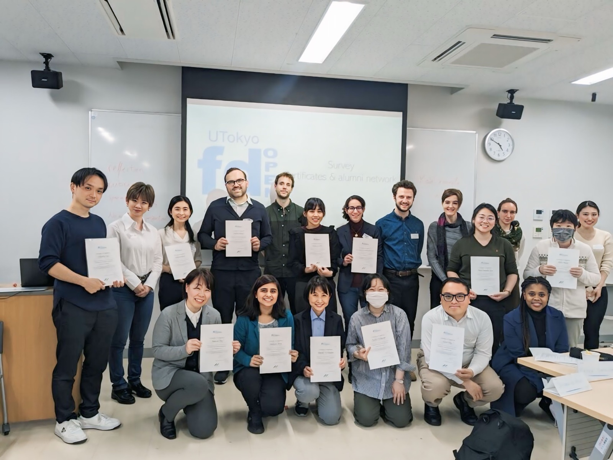

Conversation · 2024
Conversation · 2024
Achievements & Appearances
Let me show you where this work has taken me.
I have gathered the milestones, invitations, conversations, and community projects that best explain my path. This is not a complete CV. It is a guided record of the moments when my work met students, institutions, and wider audiences.
Watch & Listen
Some parts of this story are better heard in my own voice.
Courses, conversations, and public appearances that show how I explain ideas, hold a discussion, and connect academic work with wider audiences.
Conversation · 2024
 Course portrait · Hokkaido University
Course portrait · Hokkaido University
Intercultural Communication for Living in a Global Society
Watch on YouTube Course portrait · Hokkaido University
Course portrait · Hokkaido University
Understanding Video Games
Watch on YouTube Interview · Polish Sushi
Interview · Polish Sushi
Academic life in Hokkaido and PSX Extreme
Watch on YouTubeFrom the archive
A poster can sometimes say more than another paragraph.
These original materials are working traces of the rooms, audiences, and programmes behind the portfolio.

Dialogue session · APU · 2025 Starting Over: Leaving, Losing, and Finding Yourself Again Open original poster
Workshop series · APU · 2026 Foundations of Teaching & Learning Open original poster
Invited workshops · University of Tokyo · 2019 Three guest workshops in two days Open original poster Programme material · APU / Ritsumeikan · 2025
International Project Management Program
Open original material
Programme material · APU / Ritsumeikan · 2025
International Project Management Program
Open original material
How I would read this page
01Start with the academic milestones that changed my direction. 02Follow the invitations, study visits, and exchanges that widened the work. 03Meet the community work that keeps the profile human. 04Hear me speak in interviews and public conversations.


Where my path changed
These are the academic milestones I would show you first.
Global Learning in Japan · APU · 2025Hokkaido University · Recognised 2024
Competitive support · 2009–14
Facilitating global student voices
As an APU academic and event facilitator, I led an international student panel and the APU Student Podcast. My role was to draw out honest, useful accounts of choosing a university, studying, and building a life in Japan for prospective students worldwide.
Ritsumeikan APU · 2025Appointed Assistant Professor
I joined the Education Development and Learning Support Center, bringing my work in intercultural learning, faculty development, and multilingual education to APU.
Official faculty profile · 2025From NLP to intercultural higher education
APU's Research Office traces my path from Krakow and Hokkaido to research, teaching development, and public communication.
Peer-reviewed research · 2023Intercultural competence in the classroom
A study of 22 students across 15 weekly classes, turning openness, empathy, interpretation, and adaptation into visible learning.
Ritsumeikan University · 2025–26Space Management Program facilitator
Two years facilitating communication, leadership, feedback, and project work for interdisciplinary Ritsumeikan and APU cohorts; followed by a collaborative conference presentation.
International scholarly service · Since 2019Long-term programme committee work
Ongoing service for Linguistic and Cognitive Approaches to Dialog Agents, followed by programme committee work for Information Processing and Management from 2021: a continuing contribution across language, cognition, computation, and human communication.
Excellent Teacher selection
The 2023 Video Games in Society course received a 4.58/5 overall student-survey score; selected student reviews were later published by PSX Extreme.
Funding that made the Japan chapter possible
An embassy-recommended MEXT scholarship brought me to Japan. It was followed by a Global COE research assistantship, a Hokkaido international-exchange grant, and JASSO support, as well as certificates of appreciation from the National Federation of University Co-operative Associations and Hokkaido University Graduate School of Medicine.



Where the work travelled
Invitations, study visits, and exchanges kept widening what I could bring back to the classroom.
Kitami Institute of Technology · 25 November 2024International study visits · Switzerland and Canada
Developing collaboration · Kaizen Academy
Brown Bag Lunch · 17 November 2021
AGH University of Science and Technology · 2022
Responsible applications of generative AI
I led a hybrid faculty-development lecture for staff from Kitami Institute of Technology, Otaru University of Commerce, and Obihiro University of Agriculture and Veterinary Medicine. The session connected lesson planning, feedback, assessment, data analysis, and content creation with ethics, limitations, and responsible adoption.
University of Tokyo · 2019Three invited workshops in two days
I led foundation and advanced sessions on teaching in English, plus a workshop on intercultural communication in the classroom. Faculty and graduate students worked with real misunderstandings, learning cultures, feedback, and participation.
Nitobe College · Hokkaido UniversityInterdisciplinary graduate education
Across team-learning, problem-finding and problem-solving courses, the Hult Prize Challenge, professional English, and presentation seminars, I helped graduate students develop leadership, ethical judgment, and collaborative work across disciplines and cultures.
Hokkaido University · Guest speaker · 2025Fighting false narratives on social media
I returned to Nitobe College as a guest speaker for interdisciplinary student projects addressing misinformation and the social consequences of false narratives online.
Faculty development · 2017–25More than 30 workshops built around teaching practice
At Hokkaido University and partner institutions, I worked with faculty and graduate students on EMI, syllabus design, active learning, presentation skills, intercultural communication, feedback, and responsible AI. One early example was a two-hour faculty workshop in 2019 on communicating across cultural and disciplinary differences.
Academic presentations · 2024–25Teaching practice turned into shared evidence
Presentations addressed language choice, student reflection, Nitobe College, generative AI, game-industry careers, and Hokkaido University's coordinated approach to developing faculty confidence in teaching through English.
Learning from five teaching centres
I first compared faculty-development practice at ETH Zurich, the University of Bern, and EPFL. Later, visits to Simon Fraser University's Center for Educational Excellence and UBC's Centre for Teaching, Learning and Technology opened a Canadian conversation about educational development, learning technology, curriculum work, and long-term partnership.
Taking a games-and-education partnership further
Our collaboration began around Understanding Video Games, where critical game literacy, responsible AI, industry practice, and student creativity could meet. I will now also support Kaizen Academy's educational work. We will define the scope together as the programme develops.
Making communication easier across disciplines
I presented my path from natural-language processing and e-learning to intercultural communication, teaching, games journalism, and life in Japan. The session used code-switching, body language, Japanese packaging, and everyday curiosities to show how research and personal experience can open a useful conversation.
Invited reflection across Japan and Italy
In a guest webinar with Dr Weronika T. Adrian, I compared how Polish academics adapt their teaching to different educational cultures in Sapporo and Calabria. AGH recognised the contribution with a certificate of appreciation.
Where I stayed close to everyday life
I have always needed intercultural work to matter beyond the university.
Sapporo International Communication Plaza · From 2020Sapporo Foreign Citizen Partner · 2022–
AP House Dialogue Cafe · APU · 2025
Supporting foreign residents in emergencies
As a trained and certified member of SAFE, I prepared to support foreign residents and visitors when language makes disaster information, evacuation, and access to help harder. The team works with Sapporo's multilingual disaster-support centre.
Helping children imagine a more inclusive city
At SAPPORO Children’s Future Talk 2023, I discussed everyday life from a foreign resident’s perspective with sixth-grade pupils and responded to their proposals for multicultural coexistence. The activity was later featured in an STV programme about Sapporo.
Starting over, honestly
In a student dialogue about leaving, losing, and finding yourself again, I spoke about loneliness, doubt, rejection, small victories, and the role of kindness, creativity, and community. It was a different kind of educational space: less about expertise, more about making change speakable.
Where you can hear my voice
These conversations let me speak about Japan, education, games, and life between cultures.
Video conversation · 19 May 2024
Contemporary Japanese Education System
A discussion with Prof. Jacek Pyżalski of Adam Mickiewicz University and Prof. Michał Ptaszyński of Kitami Institute of Technology about how Japanese education works beyond its familiar stereotypes.
Torii · 2025Japan, education, games journalism, and whales
A long-form interview about academic work, intercultural communication, writing as Mazzi, and building a life between Polish and Japanese contexts.
Moshi Moshi · 2026Japan without the fairy tale
A long conversation from Beppu about scholarship, academic life, AI and language learning, the move from Hokkaido to Kyushu, and the responsibility involved in explaining Japan without turning it into a fantasy.
Polish Sushi · 2021Academic life in Hokkaido and PSX Extreme
A conversation about combining university teaching and research in Japan with a long-running public voice in Polish games media.
Study in Japan · Doctoral yearsLife in Japan
An early first-person record of arriving in Sapporo with little Japanese and later teaching an entire university class in Japanese, alongside doctoral study, work, and everyday life in Hokkaido.
Jak proponuję czytać tę stronę
01Zacznij od momentów akademickich, które zmieniły mój kierunek. 02Prześledź zaproszenia, wizyty studyjne i wymiany, które poszerzały tę pracę. 03Poznaj pracę społeczną, która zachowuje ludzki wymiar profilu. 04Posłuchaj mnie w wywiadach i rozmowach publicznych.Gdzie zmieniał się mój kierunek
Te osiągnięcia akademickie pokazałbym Ci jako pierwsze.
Global Learning in Japan · APU · 2025Hokkaido University · Wyróżnienie 2024
Finansowanie konkursowe · 2009–14
Facylitacja głosów międzynarodowych studentów
Jako pracownik akademicki APU i facylitator wydarzenia poprowadziłem panel międzynarodowych studentów oraz APU Student Podcast. Moją rolą było wydobycie szczerych, użytecznych opowieści o wyborze uczelni, studiowaniu i budowaniu życia w Japonii dla kandydatów z całego świata.
Ritsumeikan APU · 2025Powołanie na stanowisko adiunkta
Dołączyłem do Education Development and Learning Support Center, wnosząc do APU doświadczenie w uczeniu międzykulturowym, rozwoju dydaktycznym kadry i edukacji wielojęzycznej.
Oficjalny profil akademicki · 2025Od NLP do międzykulturowego szkolnictwa wyższego
Research Office APU przedstawia moją drogę od Krakowa i Hokkaido do badań, rozwoju dydaktyki i komunikacji publicznej.
Recenzowane badanie · 2023Kompetencje międzykulturowe w klasie
Badanie 22 studentów podczas 15 cotygodniowych zajęć, uwidaczniające uczenie się otwartości, empatii, interpretacji i adaptacji.
Ritsumeikan University · 2025–26Facylitator programu Space Management
Dwa lata pracy nad komunikacją, przywództwem, informacją zwrotną i projektami w interdyscyplinarnych grupach Ritsumeikan i APU, zakończone wspólnym wystąpieniem konferencyjnym.
Służba środowisku naukowemu · Od 2019Wieloletnia praca w komitetach programowych
Ciągła działalność przy Linguistic and Cognitive Approaches to Dialog Agents, a od 2021 roku także w komitecie Information Processing and Management: wkład łączący język, poznanie, informatykę i komunikację międzyludzką.
Wyróżnienie Excellent Teacher
Kurs Video Games in Society z 2023 roku otrzymał ocenę 4,58/5; wybrane recenzje studentów zostały później opublikowane przez PSX Extreme.
Wsparcie, dzięki któremu zaczął się japoński rozdział
Rekomendowane przez ambasadę stypendium MEXT sprowadziło mnie do Japonii. Później pracowałem jako asystent badawczy w Global COE, otrzymałem grant Hokkaido na międzynarodową wymianę i stypendium JASSO, a także dyplomy uznania od National Federation of University Co-operative Associations oraz Hokkaido University Graduate School of Medicine.
Dokąd wędrowała ta praca
Zaproszenia, wizyty studyjne i wymiany stale poszerzały to, co mogłem później wnieść do sali zajęciowej.
Kitami Institute of Technology · 25 listopada 2024Międzynarodowe wizyty studyjne · Szwajcaria i Kanada
Rozwijana współpraca · Kaizen Academy
Brown Bag Lunch · 17 listopada 2021
AGH University of Science and Technology · 2022
Odpowiedzialne zastosowania generatywnej AI
Poprowadziłem hybrydowy wykład dla kadry dydaktycznej Kitami Institute of Technology, Otaru University of Commerce i Obihiro University of Agriculture and Veterinary Medicine. Połączyłem planowanie zajęć, informację zwrotną, ocenianie, analizę danych i tworzenie treści z etyką, ograniczeniami oraz odpowiedzialnym wdrażaniem AI.
University of Tokyo · 2019Trzy zaproszone warsztaty w ciągu dwóch dni
Poprowadziłem podstawową i zaawansowaną sesję o nauczaniu po angielsku oraz warsztat komunikacji międzykulturowej w klasie. Kadra i doktoranci pracowali nad rzeczywistymi nieporozumieniami, kulturami uczenia się, informacją zwrotną i uczestnictwem.
Nitobe College · Hokkaido UniversityInterdyscyplinarna edukacja doktorantów
Na zajęciach z pracy zespołowej, odkrywania i rozwiązywania problemów, Hult Prize Challenge, angielskiego zawodowego i prezentacji pomagałem doktorantom rozwijać przywództwo, osąd etyczny oraz współpracę ponad dyscyplinami i kulturami.
Hokkaido University · Gościnny prelegent · 2025Przeciwdziałanie fałszywym narracjom w mediach społecznościowych
Wróciłem do Nitobe College jako gościnny prelegent przy interdyscyplinarnych projektach studenckich dotyczących dezinformacji i społecznych konsekwencji fałszywych narracji w sieci.
Rozwój dydaktyczny kadry · 2017–25Ponad 30 warsztatów zbudowanych wokół praktyki dydaktycznej
Na Hokkaido University i w instytucjach partnerskich pracowałem z kadrą i doktorantami nad EMI, sylabusami, aktywnym uczeniem się, prezentacjami, komunikacją międzykulturową, informacją zwrotną i odpowiedzialnym wykorzystaniem AI. Jednym z wcześniejszych przykładów był dwugodzinny warsztat dla kadry w 2019 roku o komunikacji ponad różnicami kulturowymi i dyscyplinarnymi.
Wystąpienia akademickie · 2024–25Praktyka dydaktyczna zamieniona we wspólne dowody
Wystąpienia dotyczyły wyboru języka, refleksji studentów, Nitobe College, generatywnej AI, karier w branży gier oraz skoordynowanego podejścia Hokkaido University do rozwijania pewności kadry w nauczaniu po angielsku.
Nauka z pięciu centrów rozwoju dydaktyki
Najpierw porównywałem praktyki rozwoju dydaktycznego kadry w ETH Zurich, University of Bern i EPFL. Później wizyty w Center for Educational Excellence na Simon Fraser University oraz Centre for Teaching, Learning and Technology na UBC otworzyły kanadyjską rozmowę o rozwoju dydaktyki, technologiach edukacyjnych, pracy nad programami i długofalowej współpracy.
Dalszy ciąg partnerstwa wokół gier i edukacji
Nasza współpraca zaczęła się wokół kursu Understanding Video Games, w którym mogły spotkać się krytyczne rozumienie gier, odpowiedzialna AI, praktyka branżowa i kreatywność studentów. Teraz będę również wspierał działania edukacyjne Kaizen Academy. Zakres współpracy będziemy doprecyzowywać wraz z rozwojem programu.
Jak ułatwiać komunikację ponad dyscyplinami
Opowiedziałem o drodze od przetwarzania języka naturalnego i e-learningu do komunikacji międzykulturowej, dydaktyki, dziennikarstwa growego i życia w Japonii. Wykorzystałem przełączanie kodów językowych (code-switching), język ciała, japońskie opakowania i codzienne ciekawostki, pokazując, jak badania oraz osobiste doświadczenie mogą otwierać użyteczną rozmowę.
Zaproszona refleksja pomiędzy Japonią i Włochami
Podczas gościnnego webinaru z dr Weroniką T. Adrian porównywałem, jak polscy akademicy dostosowują dydaktykę do odmiennych kultur edukacyjnych w Sapporo i Kalabrii. AGH uhonorowało ten wkład dyplomem uznania.
Gdzie pozostawałem blisko codzienności
Zawsze potrzebowałem, by praca międzykulturowa miała znaczenie także poza uniwersytetem.
Sapporo International Communication Plaza · Od 2020Sapporo Foreign Citizen Partner · Od 2022
AP House Dialogue Cafe · APU · 2025
Wsparcie cudzoziemców podczas katastrof
Jako przeszkolony i certyfikowany członek SAFE przygotowywałem się do pomocy zagranicznym mieszkańcom i turystom, gdy język utrudnia dostęp do informacji, ewakuacji i wsparcia. Zespół współpracuje z wielojęzycznym centrum pomocy kryzysowej Sapporo.
Pomoc dzieciom w wyobrażeniu bardziej otwartego miasta
Podczas SAPPORO Children’s Future Talk 2023 rozmawiałem z szóstoklasistami o codziennym życiu z perspektywy zagranicznego mieszkańca i komentowałem ich propozycje wielokulturowego współistnienia. Materiał pokazano później w programie STV poświęconym Sapporo.
Uczciwie o zaczynaniu od nowa
W rozmowie ze studentami o odchodzeniu, stracie i ponownym odnajdywaniu siebie mówiłem o samotności, zwątpieniu, odrzuceniu, małych zwycięstwach oraz roli życzliwości, kreatywności i wspólnoty. Była to inna przestrzeń edukacyjna: mniej o eksperckości, więcej o tym, jak nadać zmianie język.
Gdzie możesz usłyszeć mój głos
W tych rozmowach opowiadam o Japonii, edukacji, grach i życiu pomiędzy kulturami.
Rozmowa wideo · 19 maja 2024
Contemporary Japanese Education System
Rozmowa z prof. Jackiem Pyżalskim z UAM i prof. Michałem Ptaszyńskim z Kitami Institute of Technology o tym, jak działa japońska edukacja poza jej najbardziej znanymi stereotypami.
Torii · 2025Japonia, edukacja, prasa growa i wieloryby
Rozbudowany wywiad o pracy akademickiej, komunikacji międzykulturowej, pisaniu jako Mazzi i budowaniu życia pomiędzy polskim i japońskim kontekstem.
Moshi Moshi · 2026Japonia bez baśniowej otoczki
Długa rozmowa z Beppu o stypendium, życiu akademickim, AI i nauce języka, przeprowadzce z Hokkaido na Kiusiu oraz odpowiedzialności za opowiadanie o Japonii bez zamieniania jej w fantazję.
Polish Sushi · 2021Praca akademicka na Hokkaido i PSX Extreme
Rozmowa o łączeniu dydaktyki i badań w Japonii z wieloletnim publicznym głosem w polskich mediach growych.
Study in Japan · Okres doktoratuLife in Japan
Wczesny zapis z pierwszej osoby o przyjeździe do Sapporo z niewielką znajomością japońskiego i późniejszym prowadzeniu całych zajęć uniwersyteckich po japońsku, a także o doktoracie, pracy i codziennym życiu na Hokkaido.
Contact